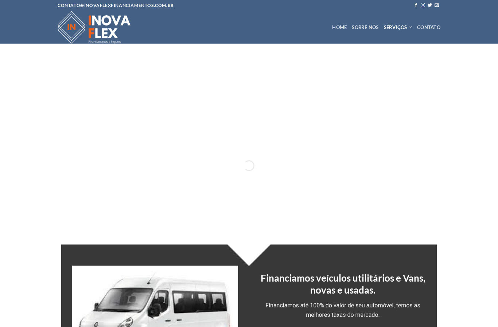
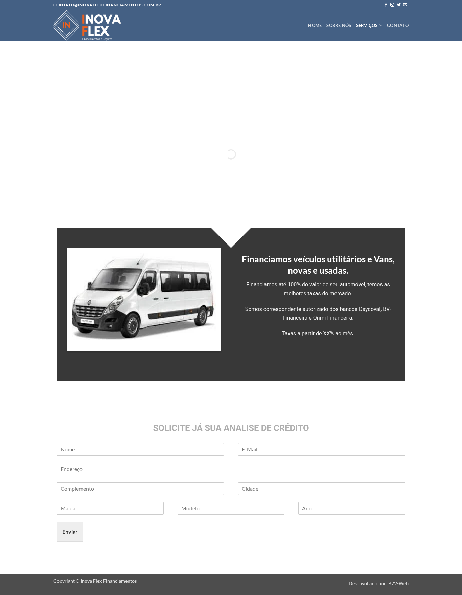

Sistema de Investigação de Marca e Identidade Online
https://www.inovaflexfinanciamentos.com.br/financiamento-de-utilitarios/
Prioridade: MEDIUM · Cenário: B_AMBIGUOUS_COMMUNICATION · Revisão humana: PENDING
O estabelecimento atua como promotora/correspondente de crédito e cita textualmente a BV-Financeira como parceira ao lado de outros bancos concorrentes, sem fazer uso visual indevido de logotipo. Entretanto, como a entidade não fornece seu CNPJ e dados regulatórios de ouvidoria conforme preconiza a Resolução CMN nº 4.935/2021, o caso é classificado como comunicação ambígua que requer revisão. [Revisor: CONFIRM] Confirma-se a hipotese de comunicacao ambigua (REVIEW_REQUIRED). A Inova Flex Financiamentos atua como promotora/correspondente de credito para veiculos/utilitarios e declara ser correspondente autorizada da BV-Financeira (E-TXT-001). Embora utilize identidade visual propria e cite multiplas instituicoes, capta cadastros para analise de credito (E-HEAD-2, E-SHOT-FULL) sem disponibilizar CNPJ, razao social completa ou canais de ouvidoria/atendimento regulamentares (Res. CMN 4.935/2021).


| Ref | Tipo | Local | Conteúdo |
|---|---|---|---|
| E-URL | domain | url | URL final: https://www.inovaflexfinanciamentos.com.br/financiamento-de-utilitarios/ (domínio: www.inovaflexfinanciamentos.com.br) |
| E-DISC-001 | text | search_index | Índice de busca (grounding): inovaflexfinanciamentos.com.br — **URL:** `https://inovaflexfinanciamentos.com.br/financiamento-de-automoveis/` (e páginas correlatas de caminhões e utilitários | **Como a marca é utilizada:** Promove financiamento de caminhões, utilitários e seminovos com formulário próprio de solicitação e captação de análise de crédito |
| E-SHOT-VIEWPORT | screenshot | viewport | evidence/C8d07f9c511/attempt-1/viewport.png (sha256 22c94119e1b1d540…) |
| E-SHOT-FULL | screenshot | page | evidence/C8d07f9c511/attempt-1/fullpage.png (sha256 db60e8c6a2d05591…) |
| E-TITLE | title | head | Financiamento de Utilitários - Inova Flex Financiamentos |
| E-META-1 | meta | head | og:site_name: Inova Flex Financiamentos |
| E-META-2 | meta | head | og:title: Financiamento de Utilitários - Inova Flex Financiamentos |
| E-CANONICAL | meta | head | https://www.inovaflexfinanciamentos.com.br/financiamento-de-utilitarios/ |
| E-HEAD-1 | heading | page | Financiamos veículos utilitários e Vans, novas e usadas. |
| E-HEAD-2 | heading | page | SOLICITE JÁ SUA ANALISE DE CRÉDITO |
| E-HDR | text | header | CONTATO@INOVAFLEXFINANCIAMENTOS.COM.BR HOME SOBRE NÓS SERVIÇOS CONTATO |
| E-FOLD | text | viewport (acima da dobra) | contato@inovaflexfinanciamentos.com.br Home Sobre nós Serviços Contato Financiamos veículos utilitários e Vans, novas e usadas. Financiamos até 100% do valor de seu automóvel, temos as melhores taxas do mercado. |
| E-FTR | text | footer | Desenvolvido por: B2V-Web Copyright © Inova Flex Financiamentos |
| E-NAV | nav | header | Follow on Facebook <http://url/> | Follow on Instagram <http://url/> | Follow on Twitter <http://url/> | Envie-nos um email <mailto:your@email> | Inova Flex Financiamentos - Somos especializados em financiamentos de caminhões, autos e utilitários <https://www.inovaflexfinanciamentos.com.br/> | HOME <https://www.inovaflexfinanciamentos.com.br/> | SOBRE NÓS <https://www.inovaflexfinanciamentos.com.br/sobre-nos/> | SERVIÇOS <https://www.inovaflexfinanciamentos.com.br/servicos/> | CONTATO <https://www.inovaflexfinanciamentos.com.br/contato/> |
| E-CTA-1 | cta | page | Enviar |
| E-CONTACT-1 | contact | header | Envie-nos um email <mailto:your@email> |
| E-CONTACT-2 | contact | page | Envie-nos um email <mailto:your@email> |
| E-IMG-1 | image | header (acima da dobra) | imagem alt='Inova Flex Financiamentos' src=https://www.inovaflexfinanciamentos.com.br/wp-content/uploads/2021/05/Inova_letrabrancalaranja-logo.png (200x89, acima da dobra) |
| E-TXT-001 | text | page | Somos correspondente autorizado dos bancos Daycoval, BV-Financeira e Onmi Financeira. |
| E-TXT-002 | text | page | Endereço * |
| Dimensão | Sinal | Achado | Refs |
|---|---|---|---|
| VISUAL_IDENTITY | LEGITIMATE | A identidade visual própria da Inova Flex Financiamentos predomina com logotipo e cores próprias, sem mimetização da identidade institucional do Banco BV. | E-IMG-1 E-SHOT-VIEWPORT E-SHOT-FULL |
| DECLARED_COMMERCIAL_IDENTITY | CONFUSION | Identifica-se apenas sob o nome fantasia Inova Flex Financiamentos, sem disponibilizar razão social formal ou número de CNPJ. | E-TITLE E-FTR E-SHOT-FULL |
| CORRESPONDENT_TRANSPARENCY | CONFUSION | Declara expressamente a condição de correspondente autorizado dos bancos Daycoval, BV-Financeira e Onmi Financeira, mas não cumpre os requisitos de transparência cadastral e indicação de ouvidoria da Res. CMN nº 4.935/2021. | E-TXT-001 |
| INSTITUTIONAL_LANGUAGE | LEGITIMATE | Comunicação em nome de terceiro intermediador, sem alegações de ser a instituição financeira oficial. | E-HEAD-1 E-TXT-001 |
| LOGO_USAGE | LEGITIMATE | Não há reprodução de logotipos do Banco BV; a menção ocorre estritamente de forma textual em lista de parceiros. | E-TXT-001 E-SHOT-FULL |
| SERVICE_JOURNEY | NEUTRAL | Formulário próprio para solicitação de análise de crédito para financiamento de veículos utilitários. | E-HEAD-2 E-SHOT-FULL |
| CONTACT_CHANNELS | NEUTRAL | Disponibiliza e-mail corporativo próprio de contato. | E-HDR E-FOLD |
| CONSUMER_CONFUSION | NEUTRAL | O risco de confusão direta com o banco é baixo pela presença de marca própria, contudo a falta de clareza cadastral exige cautela. | E-SHOT-FULL E-TXT-001 |
O estabelecimento atua como promotora/correspondente de crédito e cita textualmente a BV-Financeira como parceira ao lado de outros bancos concorrentes, sem fazer uso visual indevido de logotipo. Entretanto, como a entidade não fornece seu CNPJ e dados regulatórios de ouvidoria conforme preconiza a Resolução CMN nº 4.935/2021, o caso é classificado como comunicação ambígua que requer revisão.
Há declaração de correspondente ou de parceria, sem identificação suficiente ou sem confirmação cadastral.
| Tipo | Valor | Ref | Contexto |
|---|---|---|---|
| domain | inovaflexfinanciamentos.com.br | E-URL | |
| CONTATO@INOVAFLEXFINANCIAMENTOS.COM.BR | E-HDR | ||
| trade_name | Inova Flex Financiamentos | E-META-2 | |
| correspondent_declaration | Somos correspondente | E-TXT-001 | Somos correspondente autorizado dos bancos Daycoval, BV-Financeira e Onmi Financeira. |
| partnership_declaration | autorizado | E-TXT-001 | Somos correspondente autorizado dos bancos Daycoval, BV-Financeira e Onmi Financeira. |
Mapeamento indicativo para apoio à auditoria. Não constitui conclusão regulatória; a decisão definitiva pertence à auditoria.
Fonte: NORMATIVE
Art. 14. O contrato de correspondente deve estabelecer: [...] II - vedação à utilização, pelo contratado, de logomarca ou de outros atributos que sejam similares aos adotados pela instituição contratante em suas agências, postos de atendimento, sítio eletrônico na internet, aplicativo ou outras plataformas de comunicação em rede;
Evidência observada: E-IMG-1 E-SHOT-FULL E-SHOT-VIEWPORT E-TXT-001
Fonte: NORMATIVE
Art. 14. O contrato de correspondente deve estabelecer: [...] III - divulgação ao público, pelo contratado, de sua condição de prestador de serviços à instituição contratante, identificada pelo nome com que é conhecida no mercado, com descrição dos produtos e serviços oferecidos e canais de contato da instituição contratante, inclusive de sua ouvidoria, em local visível, em destaque e em formato legível, por meio de: a) sítio eletrônico do correspondente na internet, acessível na página inicial; b) aplicativo e outras plataformas de comunicação em rede do correspondente; [...]
Hipótese: Divulgação ao público da condição de prestador de serviços/parceria ausente, insuficiente, ambígua ou sem destaque. Aplicável somente se confirmado o vínculo de correspondente.
Evidência observada: E-FTR E-HEAD-2 E-SHOT-FULL E-TITLE E-TXT-001
Informação faltante:
Fonte: NORMATIVE
Art. 3º O correspondente atua por conta e sob as diretrizes da instituição contratante, que assume inteira responsabilidade pelo atendimento prestado aos clientes e usuários por meio do contratado.
Evidência observada: —
Limitações: requisitos contratuais/internos não fornecidos: mapeamento limitado ao texto normativo
Decisão: CONFIRM → REVIEW_REQUIRED / MEDIUM
Confirma-se a hipotese de comunicacao ambigua (REVIEW_REQUIRED). A Inova Flex Financiamentos atua como promotora/correspondente de credito para veiculos/utilitarios e declara ser correspondente autorizada da BV-Financeira (E-TXT-001). Embora utilize identidade visual propria e cite multiplas instituicoes, capta cadastros para analise de credito (E-HEAD-2, E-SHOT-FULL) sem disponibilizar CNPJ, razao social completa ou canais de ouvidoria/atendimento regulamentares (Res. CMN 4.935/2021).
| Tema | Severidade | Questionamento | Refs |
|---|---|---|---|
| contradictory_evidence | LOW | Coexistem declaração de correspondente e indícios de confusão. | E-TXT-001 |
| Fonte | Consulta / hipótese | URL original | Título / trecho |
|---|---|---|---|
| grounding | Objetivo: Correspondentes bancários e promotoras que declaram vínculo com a marca.
Execute no Google Search as seguintes consultas (dorks):
- ("correspondente bancário" OR "Correspondente no País" OR "correspondente do Banco BV") "Banco BV" -site:bv.com.br -site:bancobv.com.br -site:bvfinanceira.com.br -site:bvinvestimentos.com.br -site:napista.com.br -site:bvopen.com.br -site:meufinanciamentosolar.com.br -site:votorantim.com.br -site:vam.com.br -site:reclameaqui.com.br -site:jusbrasil.com.br -site:jus.br
- ("correspondente BV" OR "Somos correspondente" "Banco BV" OR "correspondente" "bv financeira") financiamento -site:bv.com.br -site:bancobv.com.br -site:bvfinanceira.com.br -site:bvinvestimentos.com.br -site:napista.com.br -site:bvopen.com.br -site:meufinanciamentosolar.com.br -site:votorantim.com.br -site:vam.com.br -site:reclameaqui.com.br -site:jusbrasil.com.br -site:jus.br
- "correspondente" "Banco Votorantim" financiamento -site:bv.com.br -site:bancobv.com.br -site:bvfinanceira.com.br -site:bvinvestimentos.com.br -site:napista.com.br -site:bvopen.com.br -site:meufinanciamentosolar.com.br -site:votorantim.com.br -site:vam.com.br -site:reclameaqui.com.br -site:jusbrasil.com.br -site:jus.br
Liste de forma abrangente as páginas públicas encontradas (até 12 resultados distintos), informando para cada uma o nome do estabelecimento/perfil, a URL e como a marca é utilizada (destaque visual, título, feirão, simulador, redes sociais e se há ou não identificação clara de CNPJ e condição de correspondente bancário). H3-service:correspondente-vinculo | https://www.inovaflexfinanciamentos.com.br/financiamento-de-utilitarios/ | inovaflexfinanciamentos.com.br **URL:** `https://inovaflexfinanciamentos.com.br/financiamento-de-automoveis/` (e páginas correlatas de caminhões e utilitários | **Como a marca é utilizada:** Promove financiamento de caminhões, utilitários e seminovos com formulário próprio de solicitação e captação de análise de crédito |
Original: https://www.inovaflexfinanciamentos.com.br/financiamento-de-utilitarios/
Final: https://www.inovaflexfinanciamentos.com.br/financiamento-de-utilitarios/
| Artefato | Caminho | SHA-256 | Bytes |
|---|---|---|---|
| screenshot_viewport | evidence/C8d07f9c511/attempt-1/viewport.png | 22c94119e1b1d540979bee21faf9cc0d1d9bc5adc8fc83fd0979d2456324f00f | 89747 |
| screenshot_full | evidence/C8d07f9c511/attempt-1/fullpage.png | db60e8c6a2d05591e46dad90b8ce340ff9f734adc5eaf8c2bcaa46e9561be134 | 165771 |
| html | evidence/C8d07f9c511/attempt-1/page.html.txt | 99dcb934938b8648cdd710fb4a91c93b92cded6bb505ee4dc6d7cfd2c6909965 | 47802 |
| text | evidence/C8d07f9c511/attempt-1/text.txt | 5d9d7b4f4a0c6b2844fbbbe13a5003bd0163ee60f085dfbba3a6641ddba07024 | 548 |
| page_data | evidence/C8d07f9c511/attempt-1/page.json | 0d350b157018dd346e4e95ad5df3fe7fa750384a3a777b31c74f0f6db796a829 | 6190 |
| Quando | De | Para | Nota |
|---|---|---|---|
| 2026-11-25T18:12:05+00:00 | DISCOVERED | QUEUED | prioritised (score 2.0) |
| 2026-11-25T18:40:12+00:00 | QUEUED | COLLECTING | |
| 2026-11-25T18:40:16+00:00 | COLLECTING | COLLECTED | |
| 2026-11-25T18:40:16+00:00 | COLLECTED | ANALYZING | |
| 2026-11-25T18:40:34+00:00 | ANALYZING | REVIEWING | |
| 2026-11-25T18:40:43+00:00 | REVIEWING | COMPLETED |